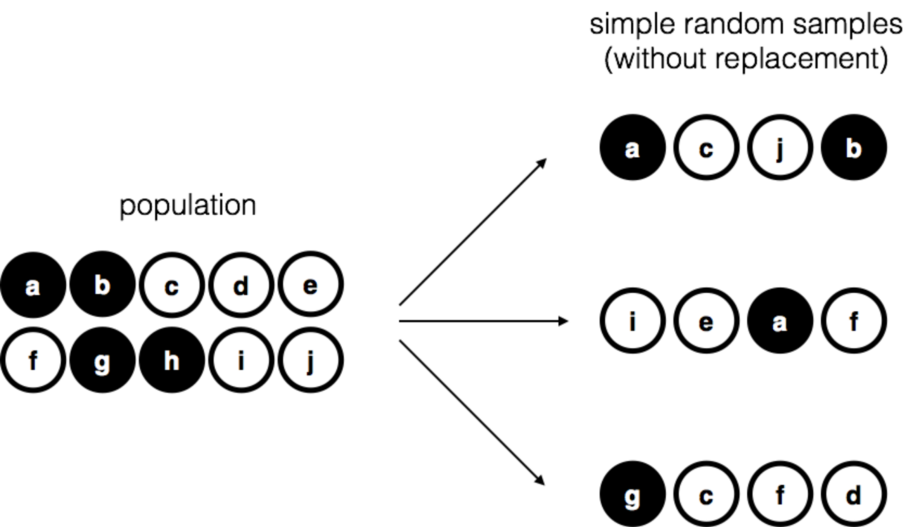
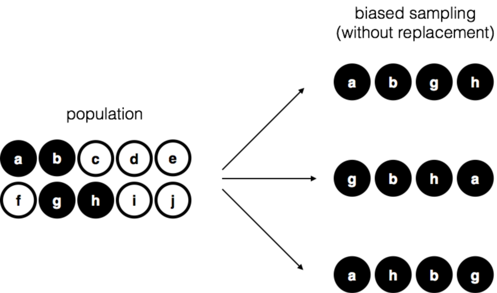
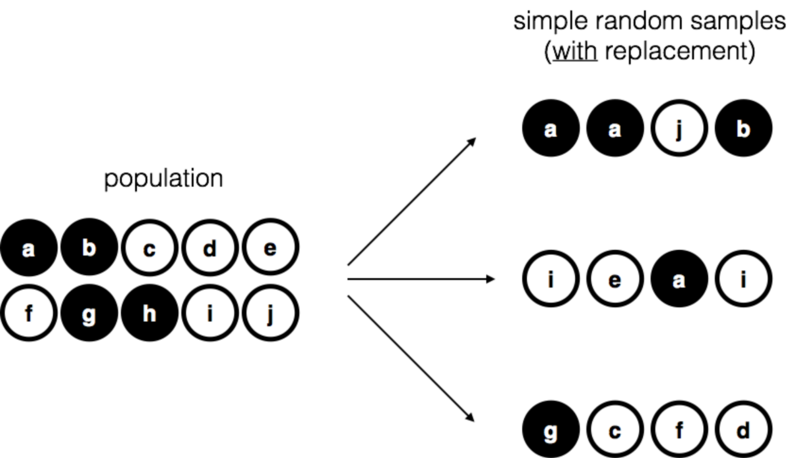

8 運用樣本估計未知量數
在前一章開頭，我們曾區辨描述統計與推論統計的差異。 單元 4 曾經討論過，描述統計的功能是清晰地總結已知的資料。對照到推論統計的目標，就是”由已知資料裡獲得未知的資訊”。經過再學習機率理論基本概念，這一章就要好好理解進行統計推論會遇到的各種問題。我們能從資料獲得的什麼樣資訊？我們要如何獲得？這兩項問題是推論統計的核心，統計學家習慣用兩個”關鍵詞“稱呼：估計(estimation)與假設檢定(hypothesis testing)。這一章的學習目標是認識有關估計的理論，不過首先會討論取樣理論，因為要認識取樣，才能充分理解估計的理論。因此這一章的編排分成兩個部分，前半部8.1到8.3是討論取樣理論，後半部8.4與8.5是示範如何應用取樣理論進行點估計與區間估計。
8.1 樣本、母群、取樣
中場報告提到一則歸納之謎，讓同學從中學習如何建構能判斷故事結局的假設。如果現在你能接受這樣的思考方式，應該能同意任何統計實務都是從接受原始資料的通用假設開始，這就是我們要學習取樣理論的原因。如果說統計理論都是要建立在機率理論的地基之上，取樣理論則是組建統計理論的材料。有效統計推論所需要的條件都是來自取樣理論，也就是要達到統計學者們認可的“推論過程”，我們必須清楚說明推論來自什麼樣本，推論適用於什麼樣的母群。
身為研究者，在任何要使用統計的狀況，最感興趣的都是資料代表的樣本。像是參加實驗的受試者反應，民調公司打電話詢問民眾投票意向等等。透過這類方式收集的資料，通常是有限且不完整的。因為我們不可能請全世界的人來參加實驗，民調公司也沒有時間和經費詢問所有選民。在 單元 4 學習的描述統計，目標只有處理手上使用的資料。那一章只有學到如何描述、總結和視覺化樣本的特點。現在我們要再往前一步了。
8.1.1 何謂母群
樣本是實在的，打看一份資料檔案，儲存的資料就是你能處理的樣本。然而，母群就抽象多了。這個詞是指所有可以用來推導結論的人類行為紀錄，可以觀測到的數值，而且比你能處理的樣本大上許多。最理想的狀態是研究者清楚曉得想研究的母群是什麼模樣，因為設計實驗和分析資料檢測假設的程序，都是根據研究者對於母群的基本認識。
只有很少的狀況，我們能清楚了解想研究的母群是什麼模樣。例如前面提到的民調公司，要研究的母群是有資格投票的選民，能調查的樣本就是這群選民之中的1000人。多數研究要面對的母群都是模糊的。典型的心理學實驗設定的母群模樣相當複雜。假如我做了一個探討人類如何思考的認知實驗，找了一百位大學生參加實驗。那麼，這個實驗的母群是以下那一種呢？
- 澳洲阿得雷德大學心理系大學部所有學生?
- 世界上所有大學心理系的大學生?
- 所有住在台灣的台灣人?
- 和原作者/譯者年紀相仿的國民?
- 任何世界上活生生的人類?
- 過去、現在、和未來的人類?
- 任何能在行星環境生存，有足夠智能的生物個體?
- 任何有智能的實體?
上述每一條都是有智慧的個體所組成的群體，不過到底是那一個群體才是原作者設計的認知實驗目標母群呢？另一個很難定義清楚母群條件的狀況，就是中場故事提到的瓶子裡裝什麼球的例子1。 例子提到抽出的12個球都是白球，並沒有彩球。我們要如何設定這個例子的母群呢？似乎以下每一條設定都有道理。
- 瓶子裡的球都被抽完？
- 負責抽球的人抽到不想抽為止？
- 用機器人抽球，抽到機器人無法運作為止？
- 找奇異博士去無限多的平行宇宙查看，看看每個宇宙抽出12個球的結果？
8.1.2 簡單隨機樣本
不論要採用那種母群的定義，重點是我們要找出代表母群一部分的樣本，還有運用從樣本學到的知識推測母群的性質。樣本和母群的關係建立在選取樣本的的程序。這樣的程序就是取樣方法(sampling method)，理解取樣方法是正確有效運用推論統計的關鍵。
我們用一個裝有十顆球的的袋子舉例說明取樣方法。每顆球各印有一個字母區別，並且被塗上黑色或白色。這十顆球構成的母群能繪製成像 圖 8.1 的示意圖一覽無遺。十顆球裡有四顆黑球和六顆白球，但是請假裝還沒打開袋子之前，我們完全不知道每顆球長什麼樣子。接著我們做一次「想像實驗」：先把袋子拿起來搖幾下，矇起眼睛從袋子裡依序一次一顆，抽出其中四顆球，將他們排在眼前。第一輪我們拿出的是字母a黑球，字母c白球，字母j白球，還有字母b黑球。紀錄完畢再將四顆球放回袋子裡，我們可以重覆同樣的抽球程序數輪，每次紀錄累積就如 圖 8.1 右邊的樣子。如此不斷重覆、結果卻每次不同的抽球程序是一種隨機程序。2 我們能認可這是隨機程序的主要理由是每次抽球之前，都要先搖一搖袋子，讓每顆球被抽出的機會是相等的。能讓母群裡的每一份子以相等機會抽出，形成的樣本就是簡單隨機樣本。每取出一顆球都不會放回袋子，能確保每一次取樣得到的樣本不會有兩個同樣的球，這種取樣限制稱為不放回取樣。
為了讓同學更了解取樣方法如何影響樣本的組合，我們來想像另一種取樣狀況。想像有個五歲小朋友跑進來，擅自打開袋子拿出全部黑球，沒放回去又跑開了。旁邊做紀錄的同學沒注意到還當成是一次實驗結果，如果發生好幾次，就會看到像 圖 8.2 展示的偏誤樣本。請想想如果做實驗的同學每次依照隨機取樣規則抽球，看到四顆球的樣本可能性有多高？取樣規則確實會影響樣本組成。如果我們了解全是黑球是有偏誤的取樣方法造成的，那麼這樣的偏誤樣本無法有效推測母群的性質！這是為什麼統計學者特別重視資料檔案裡的紀錄是不是來自簡單隨機樣本，隨機樣本的資料進行分析不大需要太多處理。

我們再來想像第三種取樣狀況。這次每輪抽出一顆球之前，先搖一搖袋子，取出一顆球做好紀錄，再放回袋子重新搖一搖袋子，再取出一顆球紀錄，如此重覆直到完成四次紀錄。如此程序取得的樣本也是簡單隨機樣本，因為每次取球都要放回袋子，因此這樣的方法稱為放回取樣。放回取樣與不放回取樣的主要差別在於，放回取樣得到的樣本有可能看到同一顆球在樣本裡出現兩次，如果 圖 8.3 的展示。

大多數心理學實驗取得的樣本是不放回取樣的結果，因為同一個人不大能參加同一項實驗兩次。不過，大多數統計理論是建立在放回取樣形成的簡單隨機樣本。現實與理論的差異在多數研究實務並不會有太多影響。如果研究對象的母群組成份子多到一個程度，放回取樣和不放回取樣的隨機樣本幾乎沒有差別。另一方面，簡單隨機樣本與偏誤樣本之間的差別，在很多實務狀況裡很難看得出來。
8.1.3 你知道的樣本並不是簡單隨機樣本
就像前面說明的範例所展示的，我們幾乎不可能從想研究的母群取得真正的簡單隨機樣本。許多在大學實驗室執行的心理學實驗，都是直接找該校大學部同學來參加，設計實驗的教授和研究生都要假裝他們的參與者都是隨機樣本的一部分。取樣方法還有很多種，而且其實是超出這門課程的學習範圍，在此還是做點介紹，給好奇心強的同學一些進階學習的指引。
分層取樣 若是要研究的母群能夠切分為幾個不同的子群體或分層，像是在多個地點進行的研究。與其從整個人口中隨機取樣，不如嘗試從每個分層中單獨收集隨機樣本。有時候分層取樣比簡單隨機取樣更容易執行，特別是母群已經被劃分為不同的分層。如果某些子群體人數很稀少，分層取樣會比簡單隨機取樣更有效。例如，要研究思覺失調症，最好將母群劃分為兩個群體（思覺失調症患者和非思覺失調症患者）3 ，然後從每個群體選取相等數量的人。如果只是隨機選取，樣本包含的思覺失調症患者人數很可能會非常少，導致研究結果毫無用處。這種特定類型的分層取樣被稱為超額取樣，因為是特意製造能代表稀少子群體的樣本。
滾雪球取樣 是一種特別適用於從”隱藏”或難以獲得的群體取樣的技術，尤其常見於社會科學。例如，今天有研究人員想找跨性別人士進行一項意見調查。一開始研究人員可能只有掌握幾位跨性別者的聯繫方式，所以首先邀請他們參加（第一階段）。在調查結束時，請求參與者提供其他可能會參加的跨性別人士聯繫方式。在第二階段，將邀請聯繫清單的人士參與調查。持續這樣過程，直到研究人員收集足夠的資料。滾雪球取樣的最大優勢是，能在很難獲得任何資料的狀況持續找出資料來源。對於統計分析，這種方法的主要缺點是樣本相當不隨機，並且很難用統計方法解決非隨機偏誤。對於研究實務，缺點是如果處理不當，研究過程可能會發生倫理問題，因為一些特定人士隱藏身份通常是有原因的。我在這裡選擇跨性別人群作為例子，就是為了強調這個問題。如果一個不小心，研究人員可能會曝露那些不願意「出櫃」的人。就算不是透過特定人士的人際關係，透過社群平台接觸他們仍然可能會侵犯他們的個人隱私。在許多狀況，聯繫他們之前獲得他們的知情同意是非常困難的，而且在很多時候，只是透過平台帳號聯絡上目標人士並且打招呼，就可能給對方帶來傷害。社群平台是複雜的環境，就算人人都可以使用平台，有倫理意識的研究人員不能將之當成可以任意取得資料的來源。
方便取樣 大致就是字面上的意思。如果不是或無法從真正感興趣的母群隨機選擇，研究人員只要透過最方便的途徑接觸樣本。除了滾雪球取樣是一種便利取樣，還有很多其他類型。心理學中的一個常見例子是找心理學系學生來做研究，這類樣本從兩個方面來說是非隨機的。首先，只找心理學系學生做研究，研究資料只能代表特定的子群體。其次，學生通常可以選擇他們參加的研究，因此資料樣本是心理系學生的自選子集合，而不是隨機選擇的子集合。在現實世界，大多數行為科學研究都是某種形式的便利樣本。有時這會造成嚴重的限制，但並非總是如此。
8.1.4 不是簡單隨機樣本該怎麼辦？
好吧，現實世界收集的資料經常不是簡單隨機樣本。這有關係嗎？萬一資料不是簡單隨機樣本，稍微思考一下就會明白，這可能會造成糟糕的分析。想想 圖 8.1 和 圖 8.2 兩種取樣程序的差異就能明白。然而，事實沒有聽起來那麼糟。某些類型的偏誤樣本是不會影響分析結果的。例如，使用分層取樣時，我們要知道什麼條件 會造成偏誤，因為我們是有意識地製造樣本。這通常是為了增加研究的有效性，而且有統計技術可以用來調整引入資料的偏差（本課程不談這部分！）。因此，在某些情況下，偏誤樣本並不是一個問題。
在一般情況的重要關鍵是，隨機取樣只是達成目標的手段，而不是目的本身。假設你採用的是方便取樣，因此可以假定樣本具有偏誤性。只有取樣方法未控制偏誤，才會導致錯誤的結論，這才是問題所在。從這個角度來看，我認為我們並不需要在每個條件都使用隨機化樣本，我們只需要針對感興趣的心理現象進行隨機取樣即可。假定我正在進行一項探討工作記憶容量研究。在第一個研究中，我能從全世界活生生的人群裡隨機取樣，只有一個例外：我只能取樣星期一出生的人。在第二個研究中，我能夠從所有澳洲人中隨機取樣，然後將結果類推到所有人類。哪一個研究結果比較好呢？答案顯然是第一個研究。為什麼？因為我們沒有理由認為“出生在星期一”與工作記憶容量有任何有意思的關聯。相比之下，我可以想到幾個原因，認為“澳洲人”可能是重要的偏誤因素。澳洲是一個富裕、工業化的國家，擁有非常發達的教育系統。在這個國家成長的人們會有很多與設計測試方法的人相似的生活經驗。這種共同經驗可能很容易轉化為相似的測試方法、心理實驗假設等等。這些考慮可能真的很重要。例如，澳洲參與者可能已經習慣專注“測試方法”彙整的相對抽象的測試材料，比起不是在類似環境中成長的人有更多“應付”經驗，而這可能導致我對工作記憶容量的錯誤推論。
這個小節的討論隱含兩個觀點。首先是身為研究的設計者立場，重要的是要考慮你所關心的母群條件，儘可能以最適合的方式進行取樣。實務上，我們通常只能使用“方便樣本”（例如，心理學教師找修心理學的學生收集資料，因為這是收集資料最便宜的方法，而我們的經費通常很有限）。如果必須使用的話，設計者應該要好好思考這種取樣方法可能存在的偏誤。另一方面是評論他人研究的立場，如果他們不得不使用方便樣本，而不是從整個人類母群進行隨機取樣，那麼我們要有禮貌地提供一個具體的理論，解釋他們的取樣方法可能如何扭曲結果。
8.1.5 母群參數與樣本統計
好的。撇開獲取隨機樣本的棘手方法論問題，讓我們考慮一個略微不同的問題。到目前為止，我們一直是以科學家的觀點討論母群。對於心理學家來說，母群可能是一群人；對於生態學家來說，母群可能是一群熊。在大多數情況，各類科學家關心的母群是現實世界中實際存在的具體事物。然而，統計學家有點與眾不同。他們像其他科學家一樣對現實世界的資料和科學感興趣，也像數學家一樣探討抽象符號的操作。因此，統計學理論定義母群的方式通常有些抽象。就像心理學研究人員想用具體的測量方法將抽象理論轉換成操作型定義(參考 小單元 2.1)，統計學家將“母群”的抽象概念轉換為可操作的數學符號。同學們已經在前一章(單元 7)學習了這些知識。它們被稱為機率分布。
在此簡單示範一下。假定我們的研究對象是一群人的智力分數。對於心理學家而言，這裡的母群是一群有智力測驗成績的真實人類。而統計學家會透過 圖 8.4 (a) 展示的機率分佈定義母群，來「簡化」這個問題。智力測驗成續的平均智商是100，標準差是15，而且分佈是常態分佈。這些數值被稱為母群參數，因為它們代表整個母群的特徵。也就是說，我們會定義這個母群的平均值\(\mu\)是100，母群標準差 \(\sigma\) 是15。
假設現在我做了一個實驗。我隨機選出100個人，請他們進行智力測驗，這樣我就得到了母群的一個簡單隨機樣本。我的樣本裡有以下一系列數字：
106 101 98 80 74 … 107 72 100
每個分數都是從一個平均值為100、標準差為15的常態分佈隨機取樣得到的。如果我繪製樣本的直方圖，就會得到像 圖 8.4 (b)的結果。你可以看到，直方圖的形狀與常態分佈大致相似，但只是粗略近似真實母群（如 圖 8.4 (a)）的分佈。以這群樣本計算樣本平均值，我得到了一個與母群平均值100相當接近但不完全相同的數字。在這個例子中，我得到的樣本平均智商是98.5，樣本標準差是15.9。這些來自樣本的統計量數是呈現資料的特徵，雖然它們接近真實母群的值，卻並不相同。通常，樣本統計量數是從資料集計算出來的，而母群參數是你想要了解的。在本章稍後，我將談到如何使用樣本統計量來估計母群參數，以及估計置信區間，但在那之前，你需要了解更多有關取樣理論的概念。
8.2 大數法則
在前一節中，我們展示了一個樣本數本數是 N = 100 的虛構智力測驗實驗結果。這個結果有些令人振奮，因為真實母群的平均值是 100，而樣本平均值 98.5 是一個相當合理的近似值。在許多科學研究中，這種精確度是可以接受的，但在其他情況下，我們希望更加精確。如果我們希望樣本統計量數更接近母群參數，可以怎麼做呢？顯然需要收集更多的資料。假定我們進行了一個更大型的實驗，這次測量了 10,000 人的智商。同學們可以使用 jamovi 模擬這個實驗的結果。在示範檔案庫裡的IQsim.omv ，我們生成了 10,000 個從平均值為 100、標準差為 15 的常態分佈中隨機取樣的數字。這是通過使用計算變項函式 = NORM(100, 15) 生成的。參見圖 圖 8.5 的直方圖和密度圖，模擬結果顯示這個更大的樣本比較小的樣本更近似真實母群分佈。這也反映在樣本統計量數。更大樣本的平均智力分數是 99.68，標準差為 14.90。這些值現在非常接近真實母群。
希望同學能從這個示範得到一點啟示，雖然有點不好意思，因為大樣本能提供更有品質的訊息，是顯而易見的，似乎不需要特別說明。其實這個觀點非常直觀，以至於機率理論的創始人之一雅各布·伯努利在1713年發表大數法則的論文時，曾經用尖酸刻薄的語氣描述這個人人都有的直覺：
即使是最蠢的人，也憑藉本能的直覺，不靠他人教導(相當了不起)就能獨自明白：觀察的次數越多，結果就越不容易偏離目標。 (Stigler, 1986, p. 第65頁)。
嗯，這段話聽起來有點自大（而且還有點性別歧視），但他的主要觀點是正確的。事實上，更多數據確實會產生更好的結果。問題是，為什麼會這樣呢？不出所料，所有人類都會直覺地認為的這樣的看法是正確的，統計學家稱之為大數法則。大數法則是一條適用於許多不同樣本統計量的數學法則，但最簡單的想法就是關於平均數的法則。樣本平均值是一個最明顯的例子，因為它是算述平均的產物（因為算述平均就是一個平均值）。大數法則應用於算述平均的意思是，隨著樣本數增加，算述平均的結果越趨近於真實的母群平均值。或者更精確一點地說，當樣本數“趨近”於無窮大（寫為\(N \longrightarrow \infty\)）時，樣本平均值趨近於母群平均值（\(\bar{X} \longrightarrow \mu\)）4。
我並不打算向同學示範如何證明大數法則，不過它是統計理論中最重要的工具之一。大數法則可以用來證明，收集越多的資料，最終將接近真相的數學工具。對於任何特定的資料集，所計算出來的樣本統計量數都可能是錯誤的，但是大數法則告訴我們，只要繼續收集更多的數據，這些樣本統計量數將趨近於真實的母群參數。
8.3 樣本分佈與中央極限定理
大數法則是非常強大的工具，但它並不能回答所有現實生活的問題。它給我們的只是一個“長期保證”。長期而言，如果我們能夠收集無限量的資料，那麼大數法則保證我們的樣本統計數據是正確的。但是正如經濟學大師凱因斯的著名論點，長期保證在我們的現實生活中幾乎沒有用處。
長期保證對當前問題的指引是一個誤導，(因為問題解決時)，我們(可能)都已經死去。如果經濟學家只能告訴我們，當暴風雨過去後，海洋會再次變平靜，那麼他們的任務就太容易也太無用了，特別是在風雨飄搖的時刻。 (Keynes, 1923, p. 80)
就像經濟學一樣，心理學和統計學也是如此。僅僅知道最終計算出的樣本平均值會趨近於母體平均值是不夠的。一個無限大的資料集終將揭露實際的母群平均值，只是精神上的慰藉，但是如果實際的資料樣本數只有 \(N = 100\) ，那麼這樣的知識在現實生活中是不夠用的。在心理學的實際研究場景，我們通常要從一個樣本數更小的資料計算樣本平均值，描述這群樣本的行為！
8.3.1 平均值的樣本分佈
考慮到現實情況，讓我們不得不放棄這樣的想法，也就是不要期待我們的研究會收集到一萬人，改成設計一個規模非常小的實驗。這次只找 \(N=5\) 個人，測量他們的智力分數。和前面的示範一樣，我們可以在 jamovi 中使用 NORM(100,15) 函式模擬這個實驗，但是這一次我只需要5個參與者，而不是10,000個。以下是 jamovi 隨機生成的五個數值(應該和你的操作結果不同)：
90 82 94 99 110
這批樣本的平均智力分數恰好是95。不出所料，比起前面示範的實驗結果不準確得多。現在想像一下，我決定重現(replicate)這項實驗。也就是說，我會盡可能地重做原來的實驗程序，隨機選擇另外5個人並測量他們的智力分數。同樣地，Jamovi可以模擬這個過程的結果，生成以下5個數字(也應該和你的操作結果不同)：
78 88 111 111 117
這次樣本的平均智力分數是101。如果我重做這個實驗10次，可能得到的結果如 表8-1 ，可以看到每次實驗的樣本平均值都不一樣。
表8-1：重現智力測驗實驗十次的結果，每次樣本數都是 \(( N = 5 )\) 。
| 參與者 1 | 參與者 2 | 參與者 3 | 參與者 4 | 參與者 5 | 樣本平均值 | |
|---|---|---|---|---|---|---|
| 實驗批次 1 | 90 | 82 | 94 | 99 | 110 | 95.0 |
| 實驗批次 2 | 78 | 88 | 111 | 111 | 117 | 101.0 |
| 實驗批次 3 | 111 | 122 | 91 | 98 | 86 | 101.6 |
| 實驗批次 4 | 98 | 96 | 119 | 99 | 107 | 103.8 |
| 實驗批次 5 | 105 | 113 | 103 | 103 | 98 | 104.4 |
| 實驗批次 6 | 81 | 89 | 93 | 85 | 114 | 92.4 |
| 實驗批次 7 | 100 | 93 | 108 | 98 | 133 | 106.4 |
| 實驗批次 8 | 107 | 100 | 105 | 117 | 85 | 102.8 |
| 實驗批次 9 | 86 | 119 | 108 | 73 | 116 | 100.4 |
| 實驗批次 10 | 95 | 126 | 112 | 120 | 76 | 105.8 |
假如現在我決定繼續以這種方式，繼續重做這個「五個智力分數」的實驗。每次完成實驗，我都會記錄下樣本平均值。隨著實驗的進行，我會累積一個新的資料集，在這個資料集中，每次實驗都有產生一個資料點。我的資料集的前10個觀察值就是 表8-1 列出的樣本平均值，因此我的資料集前幾個數值是這樣的：
95.0 101.0 101.6 103.8 104.4 …
假如我繼續重做實驗10,000次，然後用每次實驗的樣本平均值繪製直方圖，那會怎麼樣呢？這正是 圖 8.6 所展示的，5個智力分數的平均值大部分落在90到110之間。更重要的是：如果我們一遍又一遍地重做一個實驗，我們最終得到的是一個樣本平均值的分佈！（見表8-1）。統計學的正式名稱叫做樣本平均值的取樣分佈(sampling distribution of the mean)。
取樣分佈是另一個重要的統計理論概念，對於理解小樣本的行為非常關鍵。例如，當我進行第一個“五個智力分數”的實驗時，樣本平均值是95。但是 圖 8.6 的取樣分佈告訴我們，“五個智力分數”的實驗不是很準確。如果我重複進行實驗，取樣分佈告訴我，我可以預期大部分的樣本平均值會是80到120之間。
8.3.2 任何數值皆有樣本分佈！
針對取樣分佈的概念，需要注意的一點是，任何你可能想要計算的樣本統計量數都有其對應的取樣分佈。例如，假設每次我重複進行 “五個智力分數” 的實驗時，我都記錄其中最高的智力分數。這會產生一個資料集，一開始的數值可能如下：
110 117 122 119 113 …
反覆進行這個實驗過程會給我一個非常不同的取樣分佈，也就是最大值的取樣分佈。五個智力分數的最大值的取樣分佈顯示在 圖 8.7 。不出所料，如果你隨機選擇五個人，然後找出智力分數最高的人，他們的智力分數很有可能會高於平均水準。大多數情況下，你會得到智力分數在100到140之間的結果。
8.3.3 中央極限定理
至此希望同學對取樣分佈有充分的理解，特別是有關平均值的取樣分佈。在這一節，我想談談平均值的取樣分佈如何隨著樣本數而改變。以直觀來說，你應該已經知道一部分的答案。如果你只有幾個觀察值，樣本平均值可能相當不準確。假如你持續重做一個小樣本實驗並計算平均值，你會得到一個非常不同的答案。換句話說，取樣分佈的變異範圍非常寬。如果你持續重做一個大樣本實驗並計算樣本平均值，你有可能會得到和上次實驗一樣的結果，因此取樣分佈的變異範圍會非常窄。你可以在 圖 8.8 看到這個直觀敘述的效果，由左到右的圖表顯示樣本數越大，取樣分佈越窄。我們可以通過計算取樣分佈的標準差來量化這種變化，統計學名詞為標準誤差(standard error)。統計學報告裡的標準誤差通常寫成SE，由於最常報告的標準誤差是樣本平均值的，因此我們通常使用縮寫SEM(standard error of the sample mean)。從 圖 8.8 可以看出，隨著樣本數 \(N\) 的增加，SEM會減少。
好的，走到這一節，我有一個到目前為止一直省略的部分。至此示範的模擬實驗都是基於”智力測驗分數”，是因為智力測驗分數大致呈現常態分佈，所以我假設母群的分佈也是常態。如果母群的分佈不是常態分佈，那麼樣本平均數的取樣分佈會變成什麼樣子？令初次學習的同學驚訝的是，無論母群分佈是什麼形狀，當樣本數 \(N\) 增加時，樣本平均數的取樣分佈會越來越像是常態分佈。為了讓同學了解，我進行了一些模擬。我們首先從 圖 8.9 (a)，像“斜坡”的母群分佈開始。比較看起來像三角形的直方圖和黑色的鐘形曲線，同學可以看出母群分佈看起來根本不像常態分佈。接下來，我做了大量模擬的實驗。在每次實驗，我從母群隨機選取 \(N=2\) 個樣本，然後計算樣本平均值。圖 8.9 (b) 繪製了這些樣本平均值的直方圖（即 \(N=2\) 時的樣本平均數的取樣分佈）。累積的直方圖近似 \(\chi^2\) 分佈。雖然不是常態分佈，但是比起 圖 8.9（a）的母群分佈更接近黑線。當我將樣本大小增加到 \(N=4\) 時，樣本平均數的取樣分佈就非常接近常態分佈（圖 8.9（c）），當樣本數達到 \(N=8\) 時，它幾乎完全等於常態分佈。換句話說，只要你的樣本數不是太小，無論你的母群分佈長什麼樣子，樣本平均值的取樣分佈都會近似於常態分佈！
根據以上視覺化展示，關於樣本平均值的取樣分佈，我們可以得出以下結論：
- 取樣分佈的平均值與母群的平均值相同。
- 隨著樣本數的增加，取樣分佈的標準差（即標準誤）越來越小。
- 隨著樣本數的增加，取樣分佈的形狀變得越來越接近常態分佈。
中央極限定理（Central Limit Theorem）是統計學中的一個著名定理，除了證明上述所有說法都是正確的。中央極限定理也告訴我們，假設母群的平均值為\(\mu\)，標準差為\(\sigma\)，那麼樣本平均值的取樣分佈的平均值也是\(\mu\)，而平均值的標準誤則是：
\[SEM=\frac{\sigma}{\sqrt{N}}\]
因為是母群標準差\(\sigma\)除以樣本大小 N 的平方根，因此SEM會隨著樣本數的增加而變小。中央極限定理還告訴我們，樣本平均值的取樣分佈形狀會變成常態分佈。5
中央極限定理在處理各種問題都很有用。它告訴我們為什麼大樣本實驗比小樣本實驗更可靠，而且因為有標準誤的明確公式，所以它還告訴我們大樣本實驗的可靠性有多高。它也解釋了為什麼常態分佈是正常的。在真正的實驗中，我們想要測量的許多事物實際上是綜合各種不同數值指標的平均值（例如，智力測驗所測量的“普遍”智力是很多“具體”技能和能力的平均值），遇到這種情況時，各種指標的平均值應該遵循常態分佈。因為中央極限定理，常態分佈在各種真實數據隨處可見。
8.4 母群參數的點估計
在前面的章節有關智力測驗分數的所有例子中，我們已經知道了母群的參數。就像在每一位大學生的心理測驗學第一堂課中所學的，智力測驗分數的平均值被定義為100，標準差為15。但這其實是有點取巧的。我們怎麼知道智力測驗分數的真實母群平均值是100？這是因為測驗的設計者對大樣本進行了測試，然後在測驗規則做點“手腳”，使得樣本平均值為100。當然，這不是什麼壞事，這是心理測學重要的一部分。但是，需要牢記的是，這個理論上的平均值100僅適用於測試設計者用來設計測驗的母群。優秀的測驗設計師實際上會花費一些心思來提供可以應用於許多不同母群（例如不同的年齡組、不同國籍等）的“測試常模”。
這樣設計很方便，但是幾乎每個有趣的研究都要能適用於研究不同於建立測試常模的其他人群。例如，假設您想要測量南澳大利亞州一個工業鎮Port Pirie中低水平的鉛中毒對認知功能的影響。也許您會想要將Port Pirie中的智力測驗分數與南澳另一個工業城市Whyalla的樣本進行比較。6不論您考慮的是哪個城鎮，僅僅假設真實的母群平均智商是100並不合理。在我所知道的範圍內，沒有人提出合理的測量數據，能適用於南澳大利亞的所有工業城鎮。因此，我們不得不通過樣本資料估計母群參數。
8.4.1 母群平均值
假設我們前往 Port Pirie，邀請100位當地居民參加智力測驗。這些人的平均智力測驗分數為 \(\bar{X}=98.5\)。那麼整個 Port Pirie 的母群的智力測驗平均分數是多少呢？我們顯然無法知道。可能是 97.2，也可能是 103.5。由於我們的樣本並不是全部的母群，因此無法給出確定的答案。不過，如果非要我給一個“最好的猜測”，我會說是 98.5。這就是統計估計的精髓：給出最佳的猜測。
在這個例子中，未知的母群參數估計值是簡單明瞭的。直接用樣本平均值當成母群平均值的估計值。在下一節中，我將解釋這個類似直覺的答案的統計學理由。但是，現在同學們要確實了解樣本統計量和母群參數估計值是不同的概念。樣本統計量是您的數據描述，而估計值是對母群的猜測。考慮兩者的差異，統計學家通常使用不同的符號來指代它們。例如，真實母群平均值的符號為 \(\mu\)，母群平均值的估計值符號則是 \(\hat{\mu}\) 。另一方面，樣本平均值符號為 \(\bar{X}\)，也可以寫成 m。不過，簡單隨機樣本的母群平均值之估計值與樣本平均值相同。如果我觀察到樣本平均值為 \(\bar{X}=98.5\)，則我對母群平均值的估計也是 \(\hat{\mu}=98.5\)。為了保持符號清晰，我整理成以下表格 (表 8.1) ：
| 符號 | 統計學名詞 | 從那裡來的. |
|---|---|---|
| 樣本平均值 | 從樣本資料計算出來的 | |
| 母群平均值 | 完全無法知道的 | |
| 母群平均值之估計值 | 使用簡單隨機樣本就會等於樣本平均值 |
8.4.2 母群標準差
到這裡，估計母群參數看起來相當簡單，但同學可能疑 為什麼要先理解取樣理論。當母群參數是平均值，估計值（\(\hat{\mu}\)）與相應的樣本統計量（\(\bar{X}\)）恰好相同。但這種關係不是通用的。為了說明這一點，讓我們思考如何估計母群標準差，數學符號是 \(\hat{\sigma}\)。我們該使用什麼作為母群標準差的估計值呢？第一個可能的想法是，我們可以像估計平均值那樣，使用樣本統計量作為估計值。這樣做幾乎是正確的，但是不完全正確。
以下是我的說明。假如我有一個只有一個觀察值的樣本，這個例子能讓 對母群參數真實數值一無所知的情況，比較容易理解。在此我們使用一些完全虛構的資料：假設這個觀察值是我的鞋子的“光滑度”，經過測量，我的鞋子“光滑度”是\(20\)。以下是這個樣本的描述：
這是一個完全合格的樣本，即使它只有\(N=1\)個觀察值。它的樣本平均值為\(20\)，並且每個觀察值都等於樣本平均值（這是多說的！），所以它的樣本標準差為0。作為對樣本的描述，這似乎是正確的，因為樣本只有了一個觀察值，因此在樣本內觀察不到任何變異。此例報告樣本標準差\(s=0\)是正確的。但是，作為母群標準差的估計值，這樣做完全不合理，對吧？即使同學們和我都對“光滑度”一無所知，但我們對於資料處理都有一些了解。我們看不到樣本內任何變異性的唯一原因是樣本太小而無法顯示任何變異性！因此，如果樣本大小為\(N=1\)，那麼關於母群標準差我們只能回答“根本不知道”。
留意一下，稍早談樣本平均值和母群平均值時，你並沒有察覺不對勁。如果一定要猜測母群平均值，猜母群平均值是 \(20\) 並不感覺完全不合理。當然，同學可能對這樣的猜測自信程度比不上我，因為你看到樣本只有一個觀察值，但這依然是你能做出的最好猜測。
讓我們擴大一下這個樣本，假如現在有了第二個觀察值。我的資料集現在有 \(N=2\) 個鞋子的”光滑度”觀察值，完整的樣本看起來像這樣：
\[20, 22\]
這一次的樣本大小剛好足夠大到能觀察一些變異性：兩個觀察值是能觀察到任何資料變異性的最低條件！以新資料集計算的樣本平均值是 \(\bar{X} = 21\)，樣本標準差是 \(s=1\)。那麼我們能如何猜測母群參數？同樣地，母群平均值的最佳猜測就是樣本平均值，也就是說“光滑度”的母群平均值為 \(21\)。那麼標準差呢？這就有點複雜了。樣本標準差只是基於兩個觀察值，如果同學學得夠認真，可能會覺得僅僅只有兩個觀察值，是不足以“充分展現” 真正的母群變異性。這不僅僅是估計值是否正確的問題，畢竟，只有兩個觀察值的估計值，我們能合理懷疑在某些程度是錯誤的。更要擔憂的問題是誤差是系統性的。具體而言，我們懷疑樣本標準差可能比真正的母群標準差小。
如果同學有這樣的警覺非常不錯，能夠證明這一點的話就更好。其實一些數學家已經證明了系統性誤差的直覺是對的，只是除非你有一定程度的數學知識，否則了解這些證明對我們學習統計沒有太大幫助。另一方面，我們可以做一些模擬實驗來展示系統性誤差。讓我們回到智力測驗分數研究：假設真正的母群平均智力測驗分數為100，標準差為15。第一份模擬實驗先測量2個智力測驗分數，然後計算樣本標準差。如果我做好幾遍模擬，然後繪製這些樣本標準差的直方圖，得到的就是標準差的取樣分配。 圖 8.10 展示樣本標準差取樣分配的直方圖。儘管真實的母群標準差為15，樣本標準差的平均值只有8.5。請注意，這與我們在 圖 8.8 (b)中繪製的平均值取樣分配的完全不同，我們設定母群平均值為100，所有樣本平均值的平均值也是100。
現在讓我們擴展模擬實驗規模。不再只做於N = 2的情況，使用樣本大小從1到10，將這個模擬實驗重複進行。如果分別將各種樣本大小(橫軸)情況取得的樣本平均值和樣本標準差之平均值(縱軸)，繪製折線圖，就可以得到 圖 8.11 的成品。其中圖（a）是樣本平均值的總體平均，圖（b）是樣本標準差的變化曲線。兩幅圖的意義非常不同：通常不論樣本大小，樣本平均值等於母群平均值，代表這是一種不偏的估計值，這就是為什麼母群平均值的最佳估計值是樣本平均值的原因 。7 圖（b）則顯示另一回事：多數情況的樣本標準差\(s\)總是小於母群標準差\(\sigma\) ，代表這是一種有偏誤的估計值。也就是說，如果要為母群標準差\(\hat{\sigma}\)做出“最佳猜测” \(\hat{\sigma}\)，最好用比樣本標準差\(s\)大一點的數值。
解決這個系統性偏誤的方法其實非常簡單，以下說明如何解決。細談標準差之前，先回顧一下變異數。回顧一下4.2.4 變異數所提到的，變異數是所有資料偏離平均值的平方和之平均值。也就是以下公式：
\[s^2=\frac{1}{N} \sum_{i=1}^{N}(X_i-\bar{X})^2\]
樣本變異數 \(s^2\) 是母群變異數 \(\sigma^2\) 的有偏誤估計量。不過在統計實務，我們只需要做個微小的調整，就可以將其轉換為不偏估計值。方法就是改成除以 \(N-1\) 而不是除以 \(N\)。
修改後的公式就是母群變異數 \(\sigma\) 的不偏估計量。這也回答了我們在4.2.4 變異數遇到的問題。為什麼 jamovi 給我們的變異數稍有不同？那是因為 jamovi 計算的是 \(\hat{\sigma}^2\) 而不是 \(s^2\)，標準差也是一樣。如果我們除以 \(N-1\) 而不是 \(N\)，就能得到母群標準差的不偏估計值。請記住使用 jamovi 內建的標準差函數時，計算的是 \(\hat{\sigma}\) 而不是 \(s\)。8
最後一點，很多人進行統計實務都習慣稱呼 \(\hat{\sigma}\)（分母是 \(N-1\) 的標準差公式）為樣本標準差。嚴格來說這並不正確。樣本標準差應該是\(s\)（分母是\(N\) 的標準差公式）。兩者在概念和數值的意義都不相同。前者是一種母群標準差的估計值，後者是一種樣本性質。不過，幾乎所有現實世界的統計問題都是要找出母群參數的合理估計值，因此多數報告都是呈現\(\hat{\sigma}\)，而非\(s\)。雖然這是正確的報告方式，只是多數人在撰寫報告時，對於術語往往不夠精確，因為「樣本標準差」寫起來比「估計母體標準差」字比較少。這並不是嚴重的問題，實際上我也和其他人一樣這樣使用詞彙。儘管如此，我認為了解兩者在概念上的差異非常重要。混淆「已知樣本的已知屬性」和「透過樣本對母群的猜測」永遠都不是一件好事。當你開始認為 \(s\) 和 \(\hat{\sigma}\) 是相同的東西時，你就要好好拿出這本書複習了。
最後，我將這一節的重要符號與概念整理一下(表 8.2 與 表 8.3)。
| 符號 | 統計學名詞 | 從那裡來的. |
|---|---|---|
| 樣本標準差 | 從樣本資料計算出來的 | |
| 母群標準差 | 完全無法知道的 | |
| 母群標準差之估計值 | 可使用簡單隨機樣本計算，但是不會等於樣本標準差 |
| 符號 | 統計學名詞 | 從那裡來的. |
|---|---|---|
| 樣本變異數 | 從樣本資料計算出來的 | |
| 母群變異數 | 完全無法知道的 | |
| 母群變異數之估計值 | 可使用簡單隨機樣本計算，但是不會等於樣本變異數 |
8.5 母群參數的區間估計
學習統計的最大收穫是永遠不再說「我肯定這就是答案」
– 來源不明9
這一章到目前為止，已經概述了統計學家常取用的基本取樣理論，用來根樣本資料猜測母群參數。正如己經解說的各節主題，我們需要取樣理論的原因之一是每個資料集都會有一些不確定性，因此估計值永遠不會百分之百準確。這一節我們要學的是量化估計不確定程度的方法，因為只報告像是大學心理學專業學生平均智商為115這要的點估計值並不足夠，我們還要能用數值表達猜測程度。例如：有95％ 的可能性，真實平均值介於109和121之間。這種表達方式被稱做平均值的信賴區間。
充分理解取樣分佈，計算平均值的信賴區間其實相當簡單。這裡解說計算方法：假設母群平均值為 \(\mu\)，標準差為 \(\sigma\)。我剛完成了一項有 N 名參與者的研究，這些參與者的智力測驗分數的平均值是 \(\bar{X}\)。根據中央極限定理，我們可以知道平均值的取樣分佈接近常態分佈。經由 小單元 7.5 關於常態分佈的學習，我們也知道一個服從常態分佈的取樣分佈，在平均值周圍相距約兩個標準差之內，有95％左右的量數落在此範圍內。
更精確的正確答案是：以一個符合常態分佈的取樣分佈估計母群平均值，估計值有95% 的機率落在真正母群平均值的1.96個標準差內。接下來，請記住取樣分配的標準差正式名稱為標準誤(standar error)，因此平均值的標準誤差可簡寫為SEM(Standard Error of Measurement, 測量標準誤)。當我們合成這些數字時，就能得知有95%的可能性確定由樣本資料計算得到的樣本平均值 \(\bar{X}\) ，與母群平均值差距在1.96倍的標準誤差之內。
當然，1.96並不是什麼神奇數字。如果你想要計算一個95％的信賴區間，這就是經常需要使用的乘數。若是我想要70％的置信區間，我會使用1.04作為神奇數字而不是1.96。
[更多技術細節10]
8.5.1 解讀信賴區間
學習信賴區間最困難的地方是理解其意義。很多學生第一次接觸信賴區間時，總是憑直覺說“真實平均值有95％的機率落在信賴區間內”。這種說法很簡單，似乎捕捉到“我有95％的自信”的常識想法。不幸的是，這並不完全正確。直覺定義非常依賴個人對母群平均值的個人價值觀。我之所以會說我有95％的自信，是因為這樣的說法是基於我的個人信仰。在日常生活這樣講沒什麼問題，但是回顧一下 如何解讀機率？你會注意到談論個人信念和自信心的統計觀點是貝氏統計的中心思想。然而，信賴區間不是基於貝氏觀點開發出來的工具。就像這一章各節介紹的其他估計方法，信賴區間是次數主義學派開發的工具；如果要使用次數主義學派的方法，用貝氏觀點解釋就不對盤了！
好吧，如果這樣子不是正確回答，那麼要怎麼回答呢？記得討論次數主義如何解讀機率的時候，唯一“陳述機率”的合法方式是列舉一系列可觀察的機率事件，再計算各種事件的出現次數。由此看來，解釋95％信賴區間必須根據次數。具體而言，如果我們反覆執行同樣的實驗程序，並計算每次實驗結果的95％信賴區間，大約會有95％的實驗結果計算的區間會包含真正的平均值。更進一步的說法是，使用這樣的實驗程序得到的所有資料樣本信賴區間，應該會有95％包括真正的母群平均值 。圖 8.12 用模擬實驗結果的視覺化說明這樣的概念，兩幅圖各顯示50個信賴區間，分別表示“10位受測者的智力測驗分數”（圖a）和“25位受測者的智力測驗分數”（圖b）。有點幸運的是，在這100次模擬實驗結果裡，恰好有95次包含了真實平均值。
這與貝氏觀點的關鍵差異在於，貝氏認為我們能用一個機率值，表達我們看不到的母群平均值有多麼不確定，但是次數主義學派不允許這樣解讀機率，因為沒有人能“復刻”母群！次數主義學派主張母群平均值是固定的，不能母群做任何機率式的陳述。不過，資料樣本的信賴區間是可重覆取得及計算的，所以我們可以不斷重做實驗。
因此，次數主義學派允許使用信賴區間（一種隨機變數），表達包括真實平均值的機率，但不允許估計真實母群平均值（不可重覆觀察的事件）落在置信區間內的概率。我知道這似乎有點拘泥於細節，但這確實很重要。它之所以重要是因為解釋方式的差異導致了數學方法的差異。貝氏統計有一種替代信賴區間的方法，稱為可信區間(Credible intervals)。在大多數情況下，可信區間與信賴區間的數值範圍非常接近，但在其他情況下可能會截然不同。在本書 單元 16 ，我們將學習更多貝氏統計觀點。
8.5.2 計算信賴區間
jamovi 的描述統計模組內建計算信賴區間的簡單設定。開啟’Descriptives’面板的’Statistics’子選單，最下面有兩個勾選框，分別是’Std. Error of Mean’（平均值標準誤差）和’Confidence interval for the mean’（平均值信賴區間），同學可以使用這些功能計算每個平均值的95％信賴區間（預設值）。例如，載入 IQsim.omv 檔案並勾選’Confidence interval for the mean’，就可以得到與智力測驗模擬實驗平均分數的信賴區間：下限95％CI = 99.39 和上限95％CI = 99.97。也就是大樣本數據（N=10,000）的模擬結果顯示，平均智商得分為99.68，95％ CI 為99.39至99.97。
假如要使用 jamovi 繪製信賴區間的統計圖，可以指定平均值作為箱形圖選項之一。此外，在學習特定統計方法時（例如 單元 13 的變異數分析），我們還可以將信賴區間作為分析報表的一部分。這很酷，稍後我們會學習如何做到。
8.6 本章小結
這一章涵蓋兩大主題。前半部談取樣理論，後半部談運用取樣理論估計母群參數的方法。兩大主題分為幾個小主題：
還有許多取樣與估計的主題尚未談到，本章對於心理學及統計的初學者應該是能夠理解且能吸收的。而且應用取向的心理學者不大需要深入了解統計理論。唯一你可能需要了解但本章未探討的問題，是分析的資料不是來自隨機樣本的狀況。其實已經有許多處理非隨機樣本的統計理論，不過已經超出本書範圍了。
隨機的數學推導相當繁複，並且已經超出本書的學習範圍。本書不依靠數學公式解說隨機程序，讀者只要理解取樣程序可以不斷重覆，每次取樣結果都不一樣就是一種隨機程序。↩︎
現實世界沒有那麼簡單。很難明確地將所有人類劃分為二元類別，如“思覺失調症患者”和“非思覺失調症患者”。但這不是一本臨床心理學教科書，請原諒我在書中各處的簡化用詞。↩︎
技術上來說，大數法則適用於任何一種形式如同算術平均值的樣本統計量數，樣本平均值當然適用。但是，其他樣本統計量數也可以寫成像平均值的形式。例如，樣本的變異數可以改寫為一種算術平均值，因此也受到大數法則的影響。然而，樣本的最小值無法寫成任何平均值的形式，因此不受大數法則的支配。↩︎
本書正文寫的描述都是有點簡化的。中心極限定理的應用範圍比這一節展示更普遍。像大多數介紹統計學的教科書一樣，本書只討論了一種中心極限定理成立的情況：就是從相同的分佈中取出很多獨立事件的平均值。然而，中心極限定理可適用更廣泛的情況。例如，有一種“U統計量數”，這類統計量都滿足中心極限定理的條件 ，因此在處理大樣本數的狀況，U統計量數的取樣分佈都會是常態分佈。平均值是一種符合定理的統計量數，但它不是唯一的。↩︎
請注意，如果你真的對想研究這個問題，你必須比我這裡描述的研究方式更加謹慎。不能只比較Whyalla和Port Pirie的智力測驗分數，並假設任何差異都是由鉛中毒引起的。即使這兩個城鎮之間的唯一差異確實是不一樣的精煉廠（實際情況不只如此），也需要考慮到人們已經相信鉛污染會導致認知偏誤。 復習一下@sec-A-brief-introduction-to-research-design 談到的動機效應，Port Pirie和Whyalla兩地的樣本很 可能存在不同的需求效應。換句話說，您可能會在數據中得出虛假的群體差異，因為人們認為存在真實差異。我認為這種想法相當不可信，如果一群穿著實驗袍的研究人員帶著智力測驗來到Port Pirie，當地人也許不會在乎你的真正目的，甚至會表現強烈的抗拒感，不會配合研究者進行測試。另一群Port Pirie的居民可能會有表現良好的動機，因為他們不希望他們的家鄉看起來很糟糕。Whyalla的動機效應可能會更弱，因為人們沒有任何關於“鐵礦污染”的概念，就像他們沒有“鉛污染”的概念一樣。心理學真的不是簡單的學問。↩︎
這裡有些細節我並未明確解釋。不偏性(unbiasedness)對於估計值來說是一個理想的特徵，但除了這個特徵之外，還有其他重要因素也要考量。然而，這方面的細節已經超出本書討論的範圍。我只是想提醒同學注意這裡存在一些尚未明說的複雜條件 。↩︎
除以 \(N-1\) 可以得到一個不偏的母群變異數估計值：\[\hat{\sigma}^2=\frac{1}{N-1}\sum_{i=1}^{N}(X_i - \bar{X})^2\] 以及不偏的母群標準差估計值：\[\hat{\sigma}=\sqrt{\frac{1}{N-1}\sum_{i=1}^{N}(X_i-\bar{X})^2}\] 好啦，這裡我少講了另外一些東西。 經過一些怪異且違反直覺的推導，我們會認為取平方根是沒問題的，自然認為既然 \(\hat{\sigma}^2\) 是 \(\sigma^2\) 的不偏估計值，那麼\(\hat{\sigma}\) 也是\(\sigma\)的不偏估計值。對吧？但奇怪的是並非如此。實際上，\(\hat{\sigma}\) 存在一種微妙而極小的偏差。 這實在是太奇怪了：\(\hat{\sigma}^2\) 是母群變異數 \(\sigma^2\) 的不偏估計值，但是開根號後，\(\hat{\sigma}\) 卻是母群標準差 \(\sigma\) 的有偏誤估計值。很奇怪吧？那麼為什麼 \(\hat{\sigma}\) 存在偏誤呢？用數學術語來說，原因是「非線性轉換（例如平方根）不相容於期望值」，但是對於沒有修過數理統計課程的同學來說，這聽起來就像外星語言。幸運地是，在實際情況，了不了解這一點並不重要。因為偏誤非常微小，在大多數統計實務使用 \(\hat{\sigma}\) 做為母群標準差估計值不會有太多問題。有時候試著洞察數學原理只是令人惱火罷了。↩︎
此箴言的原文散見於許多網站及客製T恤，但是原作者無法找到原始來源。↩︎
信賴區間的數學公式是：\[\mu-(1.96 \times SEM ) \leq \bar{X} \leq \mu + (1.96 \times SEM)\] 其中SEM等於\(\frac{\sigma}{\sqrt{N}}\)，而且我們有95％的信心這段數值範圍是正確的。然而，這並沒有回答我們真正感興趣的問題。以上公式告訴我們，如果我們想知道母群參數是多少，那麼應該計算所樣樣本平均值的期望值。但是，假如要用信賴區間回答這個問題，也就是想知道，計算特定樣本資料後，應該要多相信母群參數是多少，這並不難做到。使用一些高中學過的代數知識就可以巧妙地以上公式推 導如下：\[\bar{X}-(1.96 \times SEM ) \leq \mu \leq \bar{X}+(1.96\times SEM )\] 這公式透露出這段數值範圍有95％的機率包含母群平均值\(\mu\)。我們稱此範圍為95％信賴區間，簡寫為\(CI_{95}\)。簡而言之，只要N足夠大（足夠讓我們相信平均值的取樣分佈符合常態分佈），那麼我們可以將95％信賴區間的公式變得更精簡：\[CI_{95}=\bar{X} \pm (1.96 \times \frac{\sigma}{\sqrt{N}})\]↩︎
譯註~重點整理
1. 多數行為科學研究的樣本是理論上的簡單隨機樣本，這是為什麼合格的行為科學研究者也要了解如何設計減低或控制取樣偏誤的實驗。
2. 我們常假設有興趣的母群參數逼近某種機率函數的參數，包括 \(\mu\)、\(\sigma\)。↩︎譯註~重點整理
1. 大數法則與中央極限定理是 隨機樣本分佈(或稱取樣分佈)的理論基礎，讓行為科學研究者相信只要是使用隨機方法取得的資料，就是某種取樣分佈的一部分。
2. 以取樣分佈估計母群參數的逼近值，是任何行為科學研究都會進行的統計實務。↩︎譯註~重點整理
1. 取樣分佈的平均值(\(\hat{\mu}\))是直接逼近母群參數(\(\mu\))的估計值，實務報告都以樣本平均值(\(\bar{X}\))代表取樣分佈的平均值。
2. 取樣分佈的標準差(\(\hat{\sigma}\))與逼近母群參數(\(\sigma\))的不偏估計值(\(\hat{\sigma} = \frac{\sigma}{N-1}\))，不等於直接從資料計算樣本標準差(\(s = \frac{\sigma}{N}\))。jamovi與其他專業統計軟體的計算結果都是\(\hat{\sigma}\)。
3. 取樣分佈的變異數(\(\hat{\sigma^2}\))與逼近母群參數(\(\sigma^2\))的不偏估計值(\(\hat{\sigma^2} = \frac{\sigma^2}{N-1}\))，不等於直接從資料計算樣本變異數(\(s = \frac{\sigma^2}{N}\))。jamovi與其他專業統計軟體的計算結果都是\(\hat{\sigma}\)。↩︎譯註~重點整理
信賴區間是次數主義學派的典型估計方法，實務報告規範要提到的百分比(例如95%)並不是指研究結果的發生機率，而是重覆實驗能得到相同結果的相對次數。↩︎